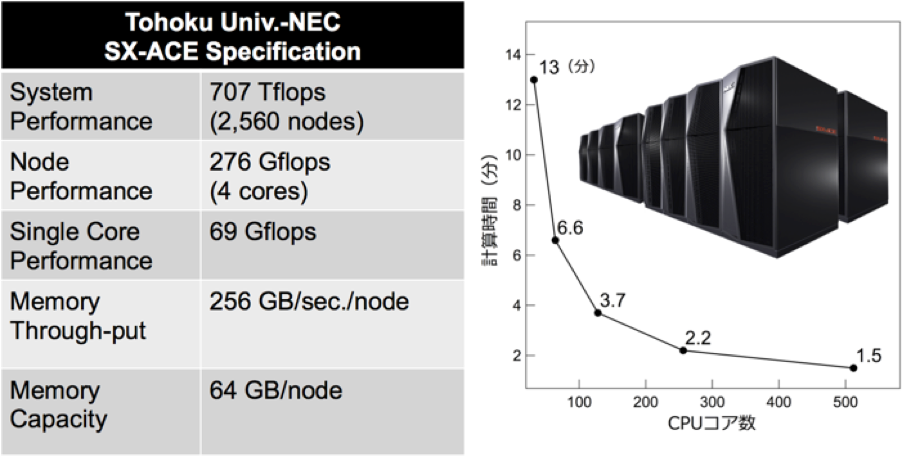
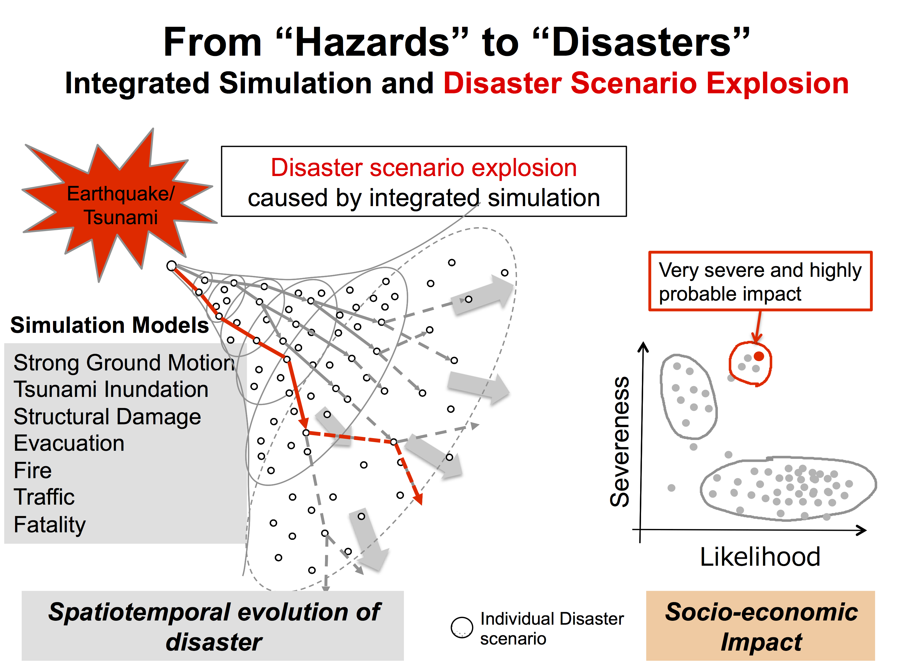
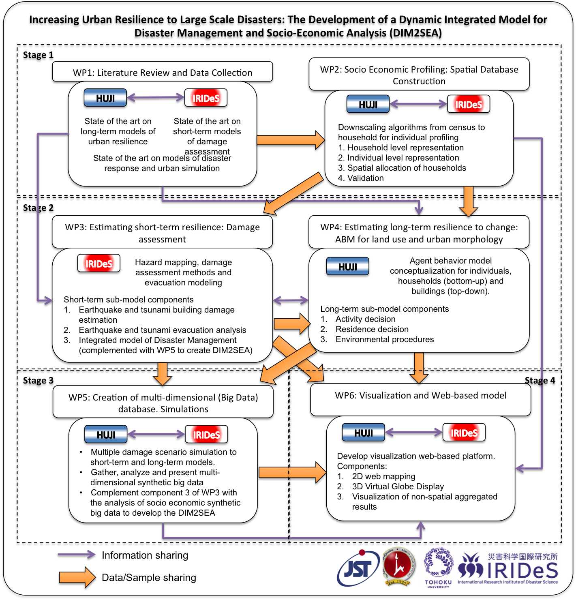
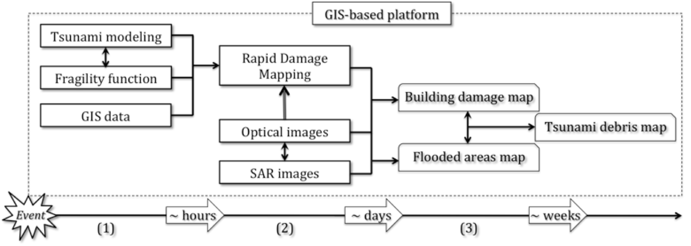
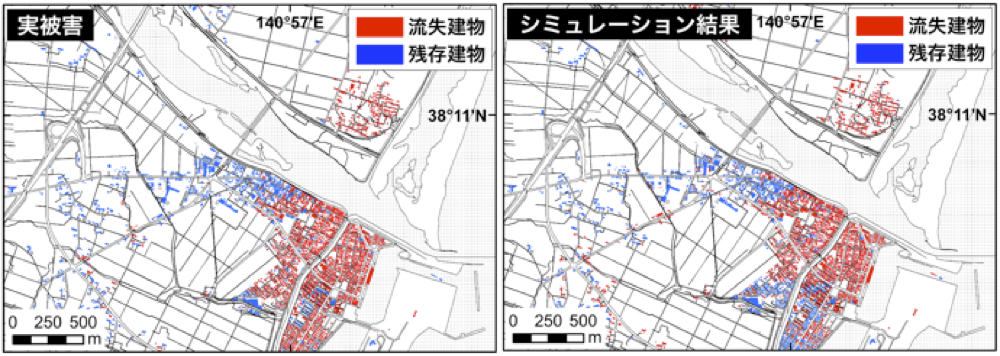
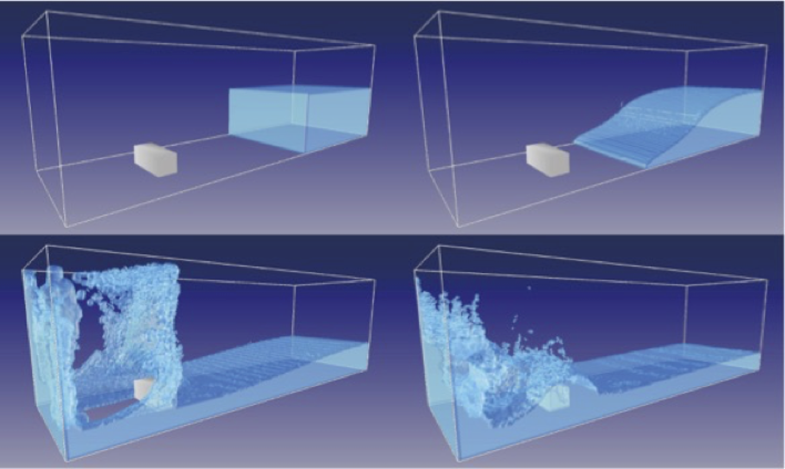
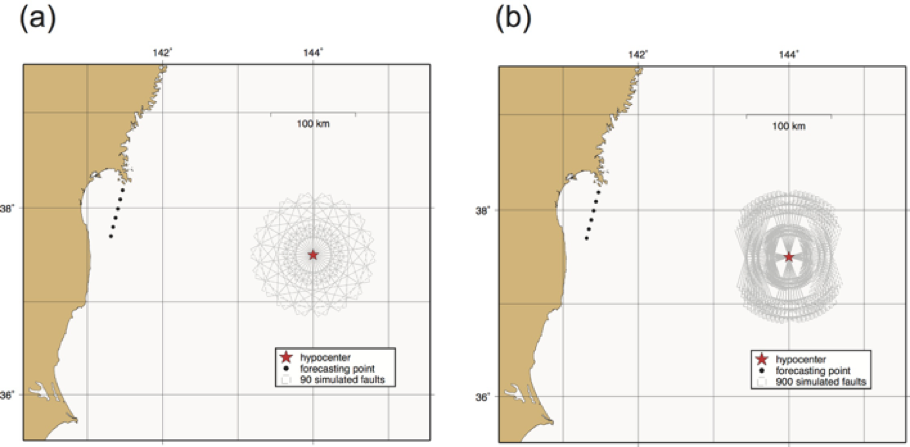
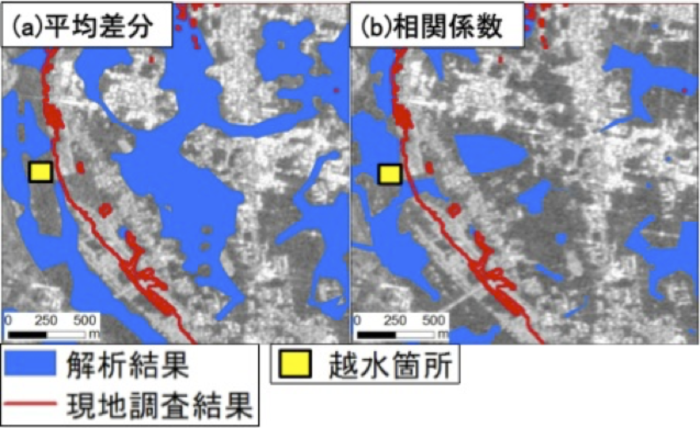

リアルタイム津波浸水・被害推定
実時間の地震情報とスーパーコンピュータを活用し、産業界・大学と連携して、地震発生から約20分以内に津波被害を推定・配信する技術を開発しています。これを「10-10-10チャレンジ」と呼び、10分で津波波源を推定し、10分で10mメッシュの浸水計算を行います。本システムは、東北大学の地震・噴火予知研究観測センターおよびサイバーサイエンスセンター、ならびにNEC・国際航業株式会社との連携により開発され、ジャパン・レジリエンス・アワード2016（優秀賞）を受賞しました。

地震・津波減災のためのビッグデータ解析（JST CREST）
2015年にJST CRESTに採択された本プロジェクトでは、災害シミュレーション、災害管理科学、数理科学、情報科学を結集しています。大規模・高分解能の数値シミュレーションと実時間のデータ同化を通じて、世界に先駆けた災害減災のためのビッグデータ解析基盤を構築し、最悪シナリオを回避するための対策を実時間で提示することで、国や自治体の意思決定を支援します。

大規模災害に対する都市レジリエンスの向上（日本・イスラエル）
エルサレム・ヘブライ大学との連携により、大規模災害の被害評価・対応計画・減災のためのシミュレーション基盤を構築します。日本側はシミュレーションとリモートセンシングによる短期被害評価を担当し、イスラエル側はGIS上に統合した詳細な土地利用モデルとエージェントベースモデルを開発します。両者の協働により、これまでにない時空間的詳細さをもつ統合的な災害管理ツールを実現します。

シミュレーションとリモートセンシングによる南米の津波予測
中南米の巨大地震は、日本を含む環太平洋諸国に影響を及ぼす津波災害を引き起こしてきました。津波リスクの高いラテンアメリカ諸国のレジリエンス向上のため、実時間計算とリモートセンシングを組み合わせ、被害の全体像を把握します。近地津波と遠地津波の影響を分けて評価し、実時間津波シミュレーションとフラジリティ関数を用いたGISベースの建物被害推定システムを開発しました。

建物被害を再現する津波シミュレーション
将来の津波被害をより正確に予測するには、構造物が流れの障害となる密集市街地での津波の挙動を理解する必要があります。私たちは、津波が市街地に浸水する過程で建物が流失していく様子を再現する手法（時間発展型合成等価粗度モデル）を構築し、どの建物が、いつ、何棟流失するかを推定します。仙台平野（名取川河口部）に適用したところ、2011年東北津波の建物被害を再現し、当時の空中写真と一致する結果が得られました。

格子ボルツマン法による次世代津波シミュレーション
津波シミュレーションは計算機性能の向上とともに急速に発展し、現在では津波高さを約10%の誤差で再現できます。市街地への津波遡上の再現には、従来は計算負荷の大きい3次元CFDモデルが必要でした。大規模並列計算に適した完全陽的スキームである格子ボルツマン法に基づく津波シミュレーションを開発することで、現状の計算速度の限界を超え、次世代の津波シミュレーション技術の構築を目指します。

緊急地震速報を用いた最悪シナリオ津波の即時推定
地震発生直後に得られる緊急地震速報を用いて、最悪シナリオの津波を推定し、迅速な被害評価を支援します。2011年東北地方太平洋沖地震では、津波警報の過小評価が避難の遅れを招きました。多数の津波シナリオを設定し、初期条件の不確実性を考慮することで、約3分で最悪ケースに生じうる最大波高を平均約97%の精度で推定します。

偏波SARによる地震建物被害把握
本研究では、地震後に取得した単一の二偏波ALOS-2/PALSAR-2画像から、地震による建物被害を評価します。本データは、軽微な被害・倒壊・傾斜の建物を識別するのに適しています。被害レベルの異なる市街地に機械学習アルゴリズムを適用し、2015年ネパール地震後のカトマンズ地区で建物被害を良好に検出しました。

LバンドSARによる都市浸水域の抽出
本研究では、SAR画像を用いて都市環境内の浸水域を検出します。2015年9月の関東・東北豪雨を事例として解析を行いました。
